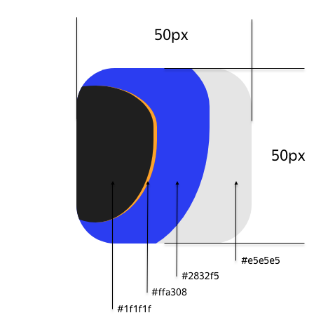

Дизайнер обновил логотип Яндекс.Драйва (масштаб x5):
Его потребуется использовать в самых разных условиях.
Чтобы это было максимально удобно, сверстайте его с помощью одного HTML-элемента на чистом CSS.
Логотип может быть использован в произвольном месте интерфейса, поэтому важно, чтобы он корректно отображался на любом фоне.
Использовать картинки (даже через data:uri) нельзя.

Примечания:
Решение нужно предоставить в виде CSS-файла.
Ваш файл будет подключен как solution.css к HTML-странице
Важно: логотип должен находиться в верхнем левом углу страницы, вплотную прижатый к нему.
Ваше решение будет тестироваться в браузере Google Chrome 69.
Рекомендуем использовать плагины для pixel-perfect верстки, например, PerfectPixel.
Вариант решения:
CSS:
:root {
--grey-color: #e5e5e5;
--blue-color: #2832f5;
--orange-color: #ffa308;
--black-color: #1f1f1f;
--size: 50px;
}
div {
margin: 10px;
width: var(--size);
height: var(--size);
font-size: var(--size);
position: relative;
background: var(--grey-color);
overflow: hidden;
border-radius: 15%;
}
div:before,
div:after {
content: '';
position: absolute;
display: block;
}
div:before {
background: var(--blue-color);
top: -33%;
left: -122%;
width: 200%;
height: 170%;
border-radius: 0 65% 100% 0;
}
div:after {
background: var(--black-color);
border-right: .02em solid var(--orange-color);
top: 9%;
left: -55%;
width: 99%;
height: 86%;
border-radius: 79% 39% 71% 0;
}